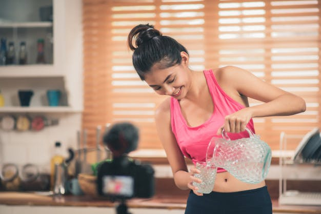

Ăn những bữa nhỏ cũng giúp bạn tránh bỏ bữa. Bỏ bữa là một thói quen gây hại cho việc giảm cân, vì sau khi bỏ bữa, bạn lại càng ăn nhiều và ăn nhanh hơn.
Bạn không cần phải giảm tất cả các loại thức ăn. Hãy giữ các phần rau và trái cây như cũ, nhưng cắt giảm tinh bột (như khoai tây, bánh mì và cơm), protein (thường là thịt, nhất là thịt đỏ) cũng như các món ngọt.
Bạn đừng quên cắt giảm đồ uống nhé! Đừng lo lắng về nước, trà và cà phê đen vì chúng không chứa calorie, nhưng hãy chỉ dùng một nửa các loại kem, nước uống tăng lực và các thức uống chứa calorie khác.
Đặc biệt, bạn cần tránh các loại nước ngọt. Uống vài lon nước ngọt mỗi ngày đồng nghĩa với uống cả ngàn calorie đấy!
Bên cạnh chế độ ăn uống, chắc chắn bạn cần tập thể dục để giảm cân trong cấp tốc. Có ba nhóm bài tập: cardio để đốt mỡ, các bài tập giãn cơ để tăng cường sự linh hoạt và các bài luyện sức mạnh
cho cơ thể săn chắc. Cả ba nhóm đều quan trọng nhưng làm sao có thời gian để tập tất cả?
May mắn thay, bạn có thể tập cả ba nhóm bài tập cùng một lúc. Khi ở phòng tập, bạn hãy bỏ qua các máy tập tạ và thiết bị cardio. Thay vào đó, hãy lên sàn tập thể dục và thực hiện các bài tập toàn thân với tạ.
Các động tác như walking lunge làm tăng nhịp tim và đốt mỡ, làm săn chắc phần dưới cơ thể, đồng thời làm hông và đùi của bạn uyển chuyển.
Bạn cũng có thể dễ dàng thực hiện các bài tập này tại nhà với hai chiếc tạ nhỏ. Vì vậy, không có lý do để bỏ tập ngay cả khi bạn không thể đến phòng gym
Không phải ngẫu nhiên mà người ta gọi là “bụng bia”. Tuy nhiên, thật khó để tránh hoàn toàn các thức uống có cồn.
Bạn có thể không muốn bỏ rượu bia hẳn, nhưng nếu kiêng uống trong vài tuần, bạn sẽ nhận thấy sự khác biệt lớn. Giảm cân là một trong nhiều lợi ích từ việc bỏ rượu bia.
Trước tiên, nếu bạn uống nước thay cho rượu vào những bữa tiệc, bạn sẽ giảm đáng kể lượng calorie. Một ly rượu vang cung cấp khoảng 125 calorie trở lên. Một ly cocktail cung cấp 150 calorie trở lên.
Rượu bia cũng làm bạn thèm ăn những món nhiều mỡ và calorie. Điều này có nguy cơ làm hỏng kế hoạch giảm cân cấp tốc của bạn.
Và cuối cùng, bạn sẽ không “phá sản” kế hoạch tập luyện hàng ngày khi không phải đối phó với cơn đau đầu và kiệt sức vào buổi sáng sau một đêm say.
Kết quả cuối cùng là bạn đỡ phải ăn kiêng mà vẫn giảm cân trong cấp tốc.
Đầu bữa trưa hoặc tối, hãy thưởng thức một chén nước súp ấm và thanh. Tránh những món súp có kem và nhiều tinh bột. Súp gà, nước rau và thậm chí nước cốt thịt bò là những lựa chọn phổ biến.
Những món súp này cung cấp rất ít calorie và giúp bạn ăn ít hơn vì một vài lý do sau.
Trước tiên, các món nước làm bạn no, vì vậy bạn không cần ăn nhiều. Và nước dùng ấm nóng cũng làm bạn ăn chậm rãi hơn.
Nếu bạn học cách ăn chậm, bạn có thêm khả năng cảm nhận các dấu hiệu no để biết khi nào cần ngừng ăn, như câu nói dân gian “ăn kỹ no lâu”.
Nhận biết cơ thể đói hoặc no là một kỹ năng quan trọng cho việc giảm cân.
Nếu bạn không thích các món nước hoặc muốn thay đổi, bạn có thể bắt đầu bữa ăn bằng một đĩa salad. Tuy nhiên, bạn nên chọn nước sốt (dressing) ít calorie, tốt nhất là dùng giấm hoặc nước cốt chanh.
Đôi khi bạn tưởng rằng mình đói, trong khi cơ thể bạn thực sự cần nước chứ không phải thức ăn. Dấu hiệu của khát và đói có thể dễ dàng bị nhầm lẫn.
Kết quả là bạn có thể ăn nhiều thức ăn hơn và tiêu thụ thêm calorie khi cơ thể khát nước.
Bạn có thể tránh vấn đề này và giảm cân nhanh hơn nếu bạn uống nước đều đặn. Hãy đổ đầy vài chai nước và bảo quản trong ngăn mát tủ lạnh sao cho dễ nhìn thấy nhất.
Bằng cách đó, bạn sẽ thấy chúng ngay lập tức khi mở cửa tủ lạnh để kiếm thức ăn.
Trước khi bạn ăn bữa chính hoặc bữa nhẹ, hãy uống một ly nước (khoảng 200ml). Cũng có thể sau khi uống một ly nước, bạn sẽ thấy rằng mình chưa cần phải ăn.
Bạn có thể thêm hương vị cho nước bằng chanh, quế, bạc hà… để tăng cảm giác thích uống nước lọc.

Xem thêm tại :